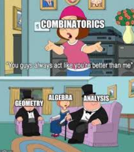
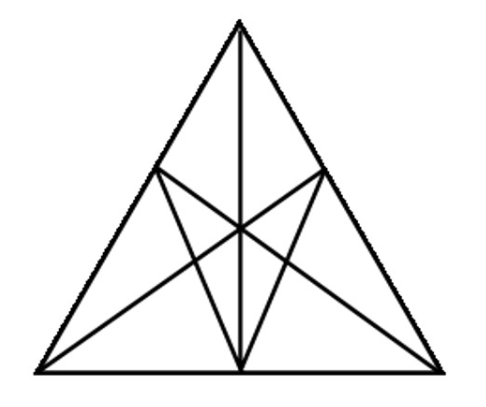
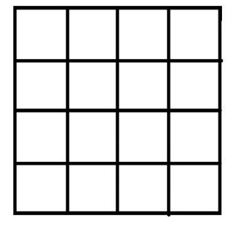

En este tema se abordan los siguientes contenidos
Diagramas de árbol
- Representación de eventos mediante diagramas de árbol
Permutaciones y combinaciones
- Modelización de situaciones combinatorias elementales
- Permutaciones sin repetición: \( n! \)
- Permutaciones con repetición: \( \frac{n!}{(n - r)!} \)
- Combinaciones sin repetición: \( \binom{n}{r} = \frac{n!}{r!(n - r)!} \)
- Combinaciones con repetición: \( \binom{n + r - 1}{r} \)
Fórmulas combinatorias
- Identidades combinatorias básicas:
- \( \binom{n}{0} = \binom{n}{n} = 1 \)
- \( \binom{n}{1} = \binom{n}{n - 1} = n \)
- \( \binom{n}{r} = \binom{n}{n - r} \)
- \( \binom{n}{k} = \binom{n - 1}{k - 1} + \binom{n - 1}{k} \)
Triángulo de Pascal y teorema binomial de Newton
- Interpretación del triángulo de Pascal
- Teorema binomial de Newton: \( (x + y)^n = \sum_{k=0}^{n} \binom{n}{k} x^{n-k} y^k \)
Notación de sumatorio
- Uso de la notación de sumatorio para sumas finitas e infinitas, por ejemplo: \( \sum_{k=1}^{n} k \), \( \sum_{k=1}^{n} k^2 \), \( \sum_{k=1}^{n} 2^k \)
Algunos ejemplos que se abordarán en el tema
Limitaciones de los diagramas de árbol
- Identificación de casos donde los diagramas de árbol no son prácticos
Problemas de conteo en contextos diversos
- Rutas en problemas de cuadrícula
- Contraseñas posibles
- Códigos de barras (protocolo EAN), ISBN e ISSN
- Números de teléfono y cuentas bancarias en distintos países
- Placas de matrícula en distintos países
- Disposición de libros en una estantería con o sin restricciones
- Clasificación o podio en una competición
- Loterías en diferentes contextos
- Manos en juegos de cartas
Implementaciones informáticas
- Programa para calcular el factorial de un número entero
- Programa para calcular coeficientes binomiales y verificar fórmulas combinatorias mediante ejemplos numéricos
Números de Catalan
- Exploración de los números de Catalan como caso especial de conteo
Aplicaciones del triángulo de Pascal
- Demostración e ilustración de la identidad: \( \binom{n}{0} + \binom{n}{1} + \cdots + \binom{n}{n} = \sum_{k=0}^{n} \binom{n}{k} = 2^n \)
Aplicaciones estadísticas y representaciones gráficas
- Uso de datos reales (por ejemplo: llegadas tarde, medios de transporte al colegio)
- Representación de reglas mediante diagramas de Venn
Materiales del tema
Hojas de ejercicios
- Problemas de la web versión PDF
- Problemas básicos con solución
- Problemas variados finales de Combinatoria (tipo COMPO)
- Problemas variados de ampliación
Bibliografía
- Cecilia Calvo Pesce et al. Aprender a enseñar matemáticas en la educación secundaria obligatoria. 2016.
- Rafael Roa et al. “Estrategias en la resolución de problemas combinatorios por estudiantes con preparación matemática avanzada”. En: Epsilon 36 (1997), pags. 433-446.
- Miguel R Wilhelmi. Combinatoria y probabilidad. Grupo de Investigación en Educación Estadística, Universidad de Granada, 2004
- Pablo Beltrán-Pellicer. Problemas para ver si sabemos contar. Tierra de Números, 2019. Disponible en https://tierradenumeros.com/post/problemas-para-ver-si-sabemos-contar/ .

Antes de entrar en harina, vamos poner a prueba algo que empezaste a hacer cuando eras casi un bebé: ¿qué tal sabes contar?
¿Cuántos triángulos ves?
¿Cuántos triángulos pueden verse en el dibujo? Los triángulos deben tener sus lados sobre las líneas del dibujo.

Fuente: Pablo Beltrán-Pellicer
¿Cuántos cuadrados hay?
¿Cuántos cuadrados pueden verse en el dibujo? Los cuadrados deben tener sus lados sobre las líneas del dibujo.

Fuente: Pablo Beltrán-Pellicer
Ampliación: ¿Serías capaz de responder a la misma pregunta pero contando rectángulos en lugar de cuadrados? ¿Cuántos rectángulos ves?